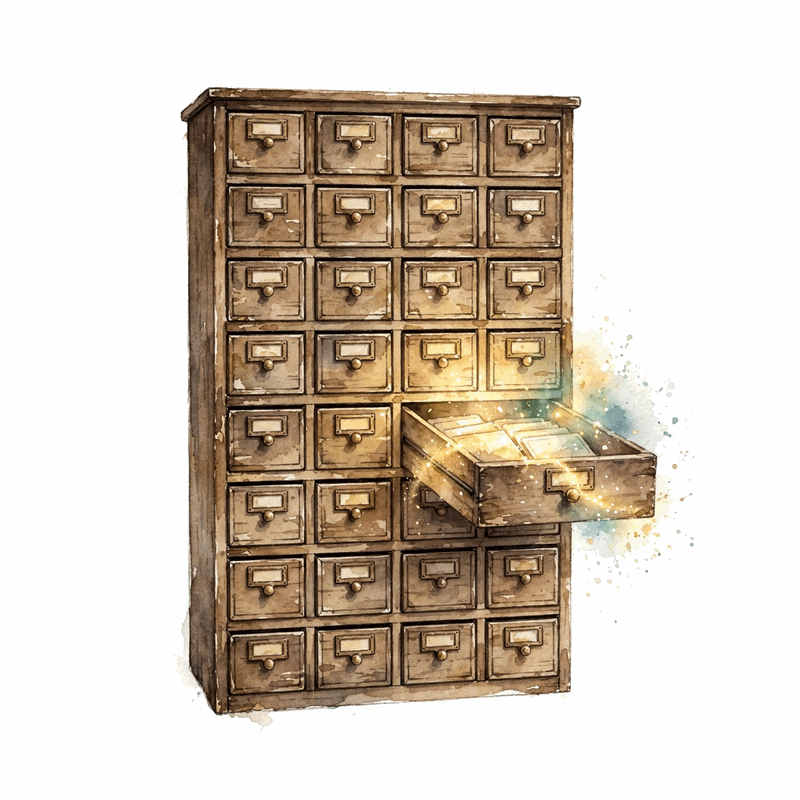

The Evidence Pipeline
A system that looks things up needs evidence it can trust. This companion walks the full U02 arc: grounding versus truth, embeddings, vector stores, chunking, hybrid search, permissions, cross-encoders, late interaction, reranking, citations, abstention, and the diagnosis discipline that closes the unit.
Source fact A claim or number taken from the lesson file content/v2/cs329z/lessons/u02_lesson.md. Each chart carries its lesson section.
Illustration A toy, picture, or simulation built for this page. It runs the lesson rule on tiny fixed inputs. It is not a lesson measurement.
Companion note My own synthesis. It joins lesson facts into advice. The lesson does not state it directly.
C01…C12 Concept numbers from the lesson.
Sourcing. No full lecture transcript exists for these sessions. Concepts C01 to C05, C07, and C08 map to session S03 (30 Sep 2026), source-supported at schedule-title level only (schedule inspected, slide deck not opened). Concepts C06, C09, C10, C11, and C12 are requested extensions, taught as independent theory. This page narrates the lesson content, not a lecture recording.


Grounding versus truth
Source fact Grounding is a pointer. Truth is a property of the world. A pointer can aim at a wrong page (grounded but false). A true statement can lack a pointer (true but ungrounded). The course cares about the pointer because the pointer is checkable
C01 contract 3.
Toy eval of 40 answers: 25 grounded and true, 5 grounded but false (bad source), 7 true but ungrounded, 3 false and ungrounded. Grounded rate = 30/40 = 0.75. Truth rate = 32/40 = 0.80. The two rates differ. Report both C01 contract 6.
The failure the lesson stages: the cited doc is a forum post with the wrong refund window. The answer is grounded and false. A quote taken out of context gives the same verdict: the pointer exists, the meaning flipped C01 contract 11.
Embeddings: score by cosine, then sort
Source fact An embedding is a meaning coordinate. Cosine similarity is the angle between coordinates, ignoring length. Toy 2D unit vectors for query "refund": d1 cos 0.90, d2 cos 0.70, d3 cos 0.00, d4 cos −0.60. Rank: d1, d2, d3, d4 C02 contract 2.
The trap: u = [1.8, 0.88] points the same way as d1 but is twice as long. Its dot with the query is 1.8, which beats the 0.9 of d1. Its cosine is 0.90, tied with d1. Unnormalized dot ranking puts u first by length, not by meaning. Normalize first C02 contract 6.
One more warning: geometry reflects the training corpus, not your task. An embedder trained on news puts "consideration" near "thoughtfulness" instead of near "payment". And antonyms can sit near each other because they share context words C02 contract 11.
Vector stores: a little recall for a lot of speed
Source fact Ten million docs in R⁷⁶⁸. Exact search scores all of them: 10M × 768 = 7.7×10⁹ multiply-adds per query, about 15 GFLOPs. At 10 queries per second that is 150 GFLOPs/s of pure scoring. The index exists to avoid this C03 contract 2.
The mechanism is space partitioning: cluster the vectors, route the query to the nearest clusters, score only those. With 1000 partitions and 10 probed, the toy cost falls 100x to 7.7×10⁷ ops. Measured recall on a toy labeled set: 0.94 for the true top-10. The trade: 100x cheaper, 6 percent of top-10 items missed C03 contracts 5, 6.
The failure at the boundary: the query sits at a cluster boundary and its true nearest neighbor is across it. With w = 1 the index misses the best doc. And an index built on stale embeddings after an embedder change is wrong everywhere: rebuild, do not tune w C03 contract 11.
Chunks: overlap past the span
Source fact The doc is 1000 tokens. Fixed 200-token chunks, no overlap: 5 chunks. The answer span covers tokens 190 to 210. It splits across chunk 1 and chunk 2. Neither chunk alone supports the answer. The boundary ate the evidence C04 contract 2.
The fix is boundary insurance. With overlap o, any span shorter than o survives uncut in at least one chunk. At o = 50, chunks start at 0, 150, 300, for 7 chunks. Chunk 2 covers 150 to 350, which holds 190 to 210 intact. Cost: 7 chunks instead of 5, a 40 percent index growth C04 contracts 5, 6.

Hybrid search: two witnesses
Source fact Dense search loves paraphrase but misses the exact part number. Lexical search finds the part number but misses paraphrase. Toy: Doc A: BM25 12.5, dense 0.82. Doc B: BM25 4.2, dense 0.91. Dense-only ranks B first C05 contract 2.
Fusion needs normalization first. Raw BM25 and cosine live on different scales, so the weight w is uninterpretable without it. Normalize each to [0, 1] over the candidate set, then fuse: s = w·s_lex + (1−w)·s_dense. At w = 0.5: A = 0.91, B = 0.623. Hybrid ranks A first. The flip is the point of the toy C05 contracts 4, 6.
Metadata and permissions: filter before scoring
Source fact The top hit is a confidential HR doc. The user is not HR. Toy: d1 (HR only) scores 0.95, d2 (all) 0.80, d3 (all) 0.70. The ACL of Bob covers d2 and d3. Unfiltered top-1: d1, a leak. Filtered top-1: d2. One filter, one leak prevented C06 contract 2.
The mechanism is pre-filtering: apply the predicate before scoring, not after. Post-filtering still embeds and ships the text through the pipeline, and a bug in the post step leaks. The model must never see text the user may not see, because the model cannot unsee it C06 contracts 3, 5.
The stale-ACL failure: Bob left HR yesterday, the index still lists him, and he retrieves the HR doc. And the lying label: metadata says public but the chunk quotes a private email. The label lied, the content leaked C06 contract 11.
Cross-encoder: the careful reader
Source fact A bi-encoder is two speed-readers who never meet. They compare notes as vectors. A cross-encoder is one careful reader with both pages open. Toy: the bi-encoder ranks d2 (0.91) over d1 (0.82). The cross-encoder reads query and doc together and scores d1 0.95, d2 0.30. Reranked top-1: d1 C07 contracts 2, 3.
The price: per-pair attention near 2 × 220² × 768 = 7.4×10⁷ FLOPs for a 20-token query and 200-token doc. Three pairs cost 2.2×10⁸, about 3x what the bi-encoder spent on the whole 10M corpus. Hence: rerank few, retrieve many C07 contract 6.
The length failure: the cross-encoder trained on short passages truncates a 2000-token doc and scores the fragment. Length mismatch silently biases the rerank C07 contract 11.
ColBERT late interaction: max per query token, then sum
Source fact Late interaction keeps every token vector and decides at query time. Each query token picks its best-matching doc token (the max), and the picks add up. Toy: query "refund policy", doc "refund within days policy", 2D unit embeddings. Score = 1.00 + 1.00 = 2.00. Mean-pooled baseline: 0.63 C08 contracts 2, 5, 6.
The matrix rows are query tokens, columns are doc tokens refund, within, days, policy. Refund row: [1.00, 0.00, 0.20, 0.90], max 1.00. Policy row: [0.90, 0.44, 0.61, 1.00], max 1.00. Late interaction sees the exact matches. Pooling blurs them C08 contract 6.
The counting failure: a doc that repeats "refund" 4 times maxes at the same 2.00 as the good doc. One vector per token cannot count distinct evidence. And negation is invisible: "not refundable" still matches "refund" strongly C08 contract 11.
Max-sim matrix: lesson numbers C08·6. Row maxes are marked. Hover a cell for its value.
Rerank: the cascade operating point
Source fact The bi-encoder returns 100 candidates. The cross-encoder can afford 10. Toy: first stage top-3 by dense: d2 0.91, d1 0.82, d5 0.80. Cross-encoder: d2 0.30, d1 0.95, d5 0.60. Final top-1: d1. The second stage reverses the first C09 contract 2.
Total cost = cheap × k1 + expensive × k2. Toy: 7.7×10⁷ + 10 × 7.4×10⁷ = 8.2×10⁸. Reranking 10 costs 10x the whole first stage. That is why k2 stays small C09 contract 6.
The recall failure: the gold doc ranks 101st in the first stage and k1 = 100 loses it forever. No reranker can recover a candidate the first stage dropped C09 contract 11.
Citations: the receipt
Source fact A citation is a pointer to a span, not to a document. Toy: 20 claims, 16 with citations, 13 of the 16 point to spans that support the claim. Citation coverage = 16/20 = 0.80. Citation precision = 13/16 = 0.81. Both numbers matter. Coverage without precision is decoration C10 contract 6.
The mechanism is span-level attribution: generate the claim from the chunk, record the chunk. Document-level citations are too coarse to check. Span-level ones are falsifiable in seconds C10 contract 5.
The partial-citation trap: the model cites correctly and then adds an uncited sentence. Partial citations create false confidence in the whole answer C10 contract 11.
Insufficient evidence: the third answer
Source fact No chunk passes the permission filter and the relevance bar. The system says: I do not have evidence for that in the docs I can access.
Not a guess. Not silence. An honest abstention C11 contract 2.
Toy: 100 questions, 70 answerable, 30 not. Threshold t answers 75, abstains 25. Of the 75 answered, 65 right. Of the 25 abstained, 20 were truly unanswerable. Precision on answered = 65/75 = 0.87. Abstention recall = 20/30 = 0.67. Lowering t raises answered count and lowers precision. The tradeoff is one curve C11 contract 6.
The drift failure: the corpus changes and t now abstains on half the easy questions. Users call the system broken. Re-tune per corpus C11 contract 11.
Retrieval diagnosis: fix the right organ
Source fact The system answered wrong. Was it the corpus, the ranker, or the reader? Toy: 100 failures. The gold chunk is absent from the corpus in 20 (coverage), present but unretrieved in 50 (ranking), retrieved but ignored in 30 (generation). Three buckets, three fixes C12 contract 2.
Fix priority: ranking (50) first. After a reranker, ranking failures fall to 20 and total failures fall from 100 to 70. The arithmetic says where the next hire goes C12 contract 6.
The wrong-gold failure: the "gold" chunk is wrong and the reader was right. The diagnosis punishes the good stage. And two stages can fail at once: single-bucket attribution misleads, so log both C12 contract 11.
All twelve nuggets
| # | Concept | Transferable principle |
|---|---|---|
| 01 | Grounding vs truth | Judge the pointer and the claim separately. A grounded falsehood is the most dangerous answer in the set. |
| 02 | Embeddings | State the similarity contract explicitly: cosine on normalized vectors, or dot only when the model trained for it. |
| 03 | Vector stores | Measure recall against exact search on a labeled set, and re-measure after every embedder change. |
| 04 | Chunks | When the answer needs two facts from distant pages, that is a multi-hop problem, not a bigger-chunk problem. |
| 05 | Hybrid search | Tune w on a labeled set, do not guess. The optimal weight is corpus-dependent. |
| 06 | Permissions | Audit retrieved sets against the live ACL service. Zero mismatches is the bar. |
| 07 | Cross-encoder | Keep k between 10 and 100. Reranking 1000 docs costs more than the rest of the pipeline. |
| 08 | ColBERT | Choose late interaction when per-query latency matters and doc vectors can be precomputed. |
| 09 | Rerank | Set k1 large enough for recall and k2 small enough for latency. |
| 10 | Citations | Label uncited claims as model knowledge. A missing receipt is information, not a gap. |
| 11 | Abstention | Tune t on a labeled set, keep a fast path for computable answers, and re-tune when the corpus moves. |
| 12 | Diagnosis | Re-diagnose after each fix. Buckets shift as components change. |
Companion note The lesson plates u02_f01 through u02_f06 (before/after pairs from the original toys) sit behind this page's figures: f01 the citation chip, f02 the ranking bars, f03 chunking with the coverage bucket, f04 fusion and the rerank arrow, f05 the max-sim matrix, f06 the ACL filter and abstain branch. Each chart above re-plots the same lesson numbers with its section citation.
The playbook
Every lesson on this page, in order. Tap one to return to its chapter.